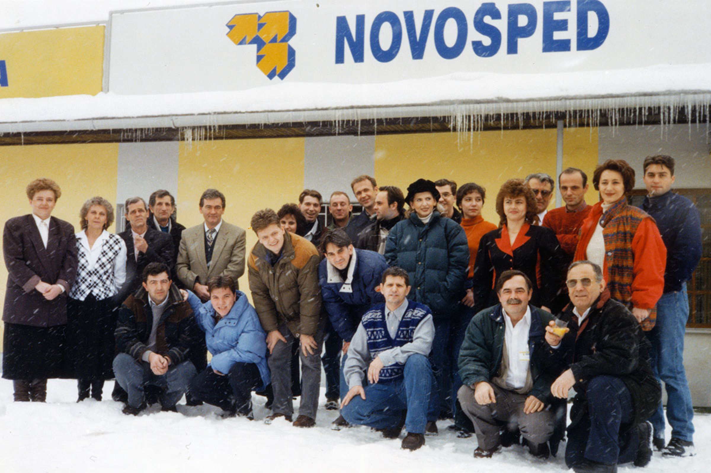
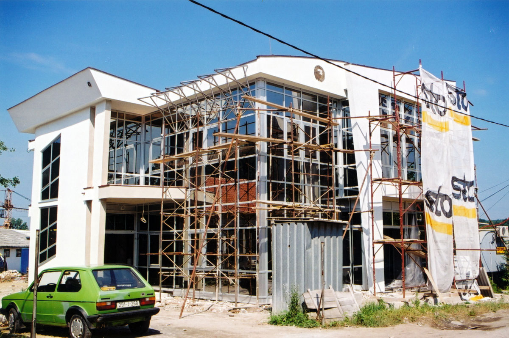

Novošped d.o.o. je aktivan učesnik na tržištu logističkog sektora od 1991. godine. Tokom tri decenije poslovanja, preduzeće je prošlo kroz brojne faze rasta, modernizacije i širenja poslovanja, što je oblikovalo našu poziciju kao jednog od vodećih pružalaca logističkih usluga u Bosni i Hercegovini.
Osnivanje preduzeća Novošped sa sjedištem u Tuzli od strane gospodina Mirsada Kurbašića.
Osnivanje poslovne jedinice u Srebreniku, čime se pruža podrška privredi Tuzlanskog kantona.
Otvorena nova poslovna jedinica na GP Izačić, pionirski doprinos razvoju carinskog sistema.
Novošped gradi savremenu administrativnu zgradu i unapređuje infrastrukturu.
Počinje rad novoizgrađenog carinskog terminala i preseljenje u nove kancelarije.
Razvoj aerodroma Tuzla i širenje poslovanja na nove lokacije.
Obnova odobrenja za carinsko skladište i implementacija elektronskog poslovanja i NTCS sistema.

